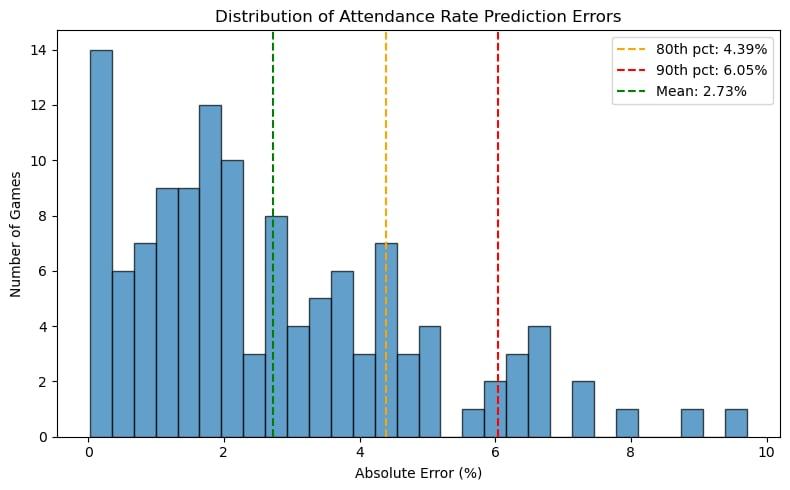
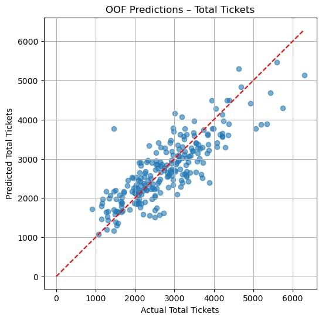
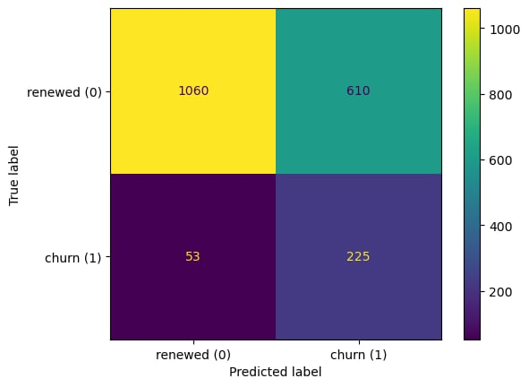
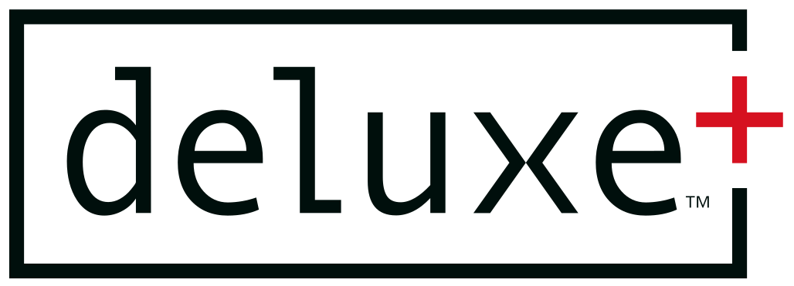
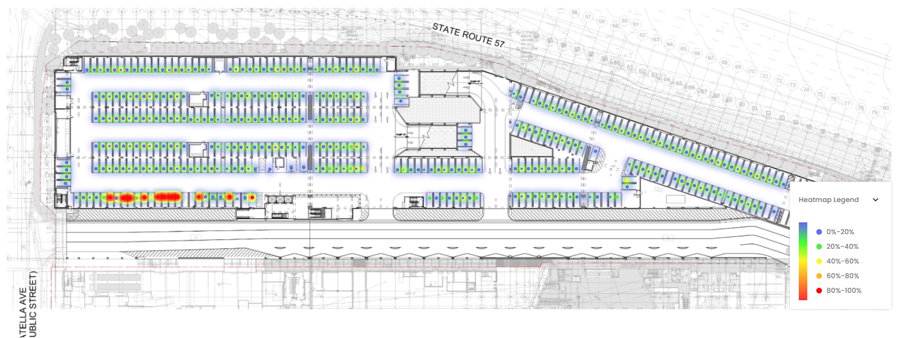

Sawyer Huang
Data Scientist focused on machine learning
I build practical data science solutions across forecasting, churn modeling, BI reporting, and data pipelines. My work has supported ticketing, retail, healthcare, and executive decision-making.
LinkedIn:
https://www.linkedin.com/in/sawyerhuang/
Email:
smh367@cornell.edu
Resume:
Download PDF
Featured Experience
Forecasting
Built ticket demand and attendance forecasting models using XGBoost and related methods to support planning, staffing, and promotions.
Churn Modeling
Developed production churn models over large CRM data to improve retention targeting and lifecycle understanding.
Data Pipelines
Built automated retail and parking analytics pipelines using Python, SQL, APIs, Azure, Jenkins, and Power BI dashboards.
Featured Projects

Ducks Attendance Prediction
Machine learning model predicting Anaheim Ducks game attendance to improve operations and marketing strategy.

Single Game Forecasting
Predictive model estimating Anaheim Ducks single game ticket buyers to support marketing, promotions, and revenue planning.

Season Ticket Churn Model
Predictive model identifying at-risk season ticket members to improve retention, engagement, and sales outreach.

Targeted Mortgage Marketing
Graduate consulting-style project focused on predicting household mortgage likelihood using classification models.

Parking Analytics Engineering
Built a real-time parking analytics pipeline and live KPI dashboards to track vehicle flow, utilization, and event-day ingress/egress across a 4,500+ bay garage.

Algorithmic Trading Bot
Personal project combining multi-source financial signals into an automated trading workflow.